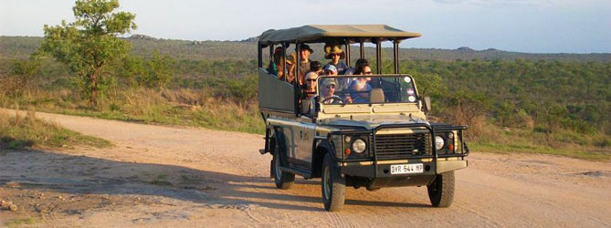
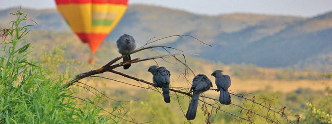

Pilanesberg Activities
Game Drives in Pilanesberg
The 57 000 hectares of the Pilanesberg Game Reserve are brimming with almost all of Southern Africa’s game species. On the transition zone of the Kalahari and the Lowveld Pilanesberg offers a unique mix of fauna and flora. A game drive in Pilanesberg in an open safari vehicle allows close encounters with lion, leopard, elephant, rhino and buffalo. The Big 5 are joined by abundance of game including rare species such as wild dog or cheetah. More than 300 bird species make things interesting for avid birders.
Game drives are usually conducted in the early mornings of late afternoons. The cooler hours of the day see activity in the wildlife. Especially predators tend to hunt at dusk or dawn. The game drives are conducted by experienced rangers and game trackers. The rangers are always eager to share their knowledge of the environment and also happily assist you with your wildlife photography. Open safari vehicles allow for great views while still guaranteeing your safety at all times.
Hot Air Ballooning in Pilanesberg
Experiencing the Pilanesberg National Park in a hot air balloon is an incredibly tranquil experience. The balloon travels with the wind so you will experience no turbulences and the only noise will hear is the occasional firing of the burner. The elevated view from the balloon allows you to appreciate the magnificence of the Pilanesberg Alkaline Ring Complex. The unique geological feature was born from volcanic activity and now forms concentric rings that are characteristic of the park.
The hot air balloon safaris include:
- One hour flight over the reserve
- Sparkling wine after landing
- Full English breakfast
- First flight certificate
- Transfer to your hotel
Hot Air Balloon rides will also give you a different perspective of the herds of antelope, buffalo and elephant. With a bit of luck you will see some of the predators and other members of the Big 5 such as black and white rhino or lion.
Guided Hikes in Pilanesberg National Park
For the intrepid adventurer, experience Pilanesberg National Park up-close and personal, on foot. There are a variety of guided hiking trails that one can enjoy within the Park. All of the hiking trails are lead by an experienced, qualified guide, who will share with you their extensive knowledge of the Pilanesberg fauna and flora.
Experiencing the park on foot allows you to enjoy being immersed in the wonderful, unspoilt wilderness while learning about the nature that surrounds you. It also provides a great opportunity for photographers to get a different angle in order to capture their perfect wildlife shot.
Your guide will introduce you to different types of vegetation, insects, birds and the unique overlaps between the Kalahari and the Lowveld. Encountering big game on foot will give you a new appreciation for the size and grace of the African wildlife. Even short hikes and bush walks can give you a different picture of the environment the Big 5 live in.
With a bit of luck you may spot some of the predators and other members of the Big 5. The guided hikes are operated 7 days a week, all year round, despite the weather.
Pilanesberg Hiking Trail:
- Rate 2018: R 2640 for 1-4 people and R 660 per additional person
- Distance: The hikes range in distance
- Duration: 4 hours
- Group size: Minimum of 4 people
- Age: Minimum age of 16 years
- Fitness: Average fitness required
-
 Follow us on Instagram!
Follow us on Instagram! -
 Follow us on Facebook!
Follow us on Facebook! -
 Follow us on Twitter!
Follow us on Twitter! -
 Reserve your trip on TripAdvisor!
Reserve your trip on TripAdvisor!